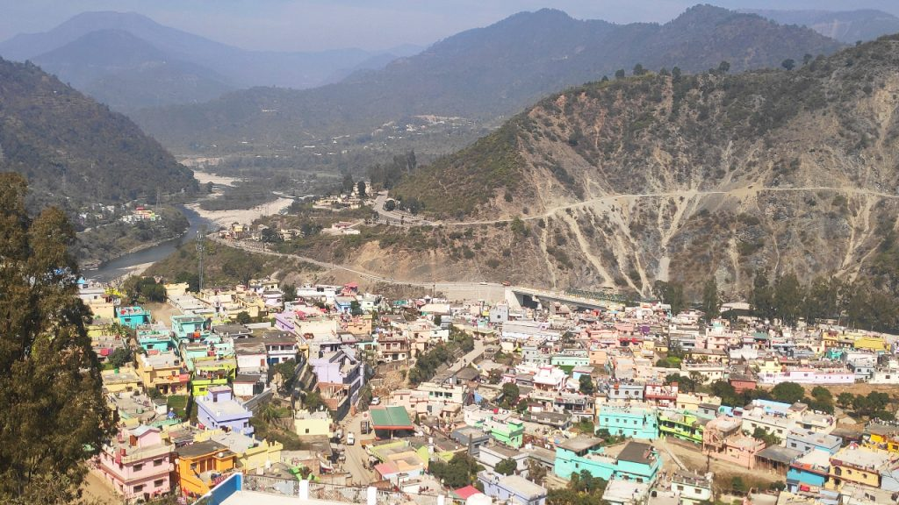
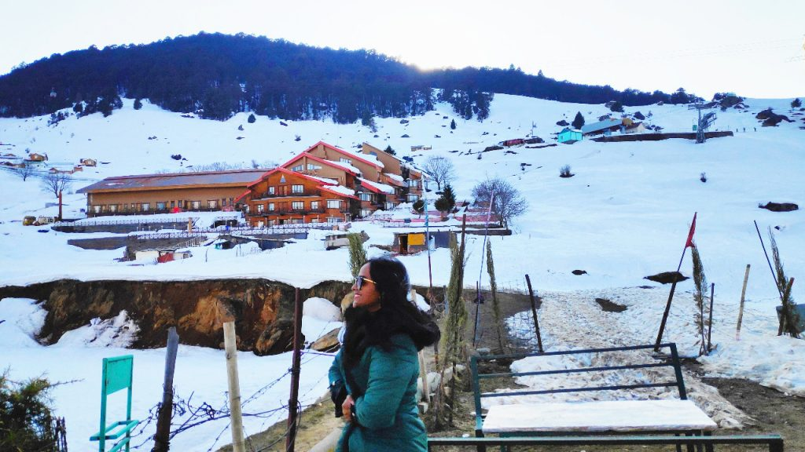
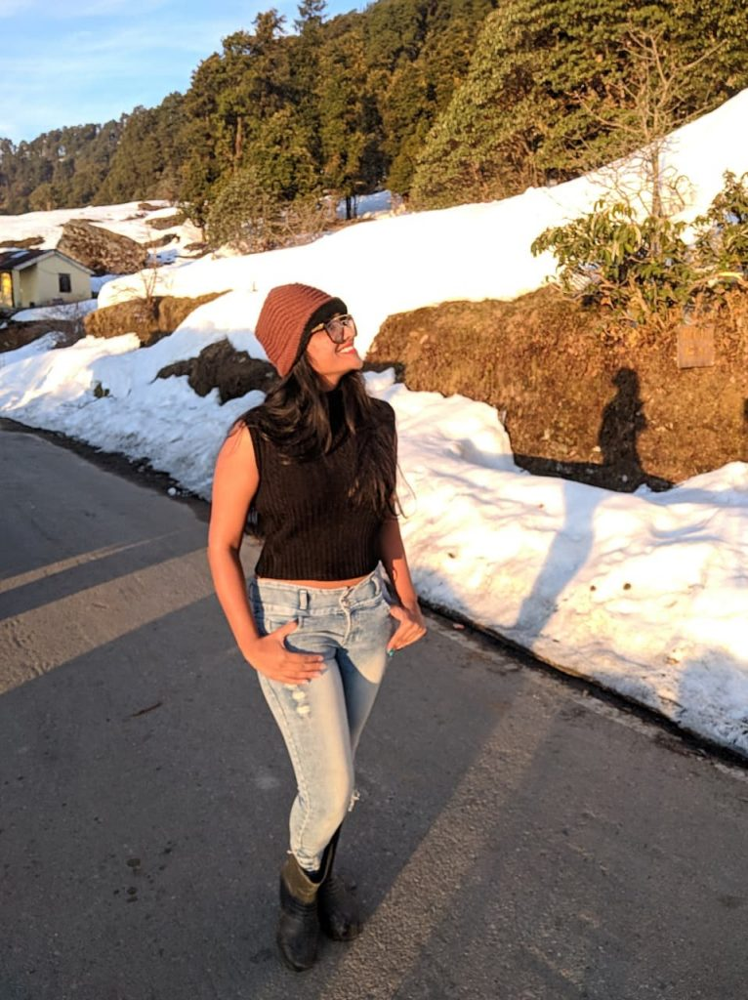
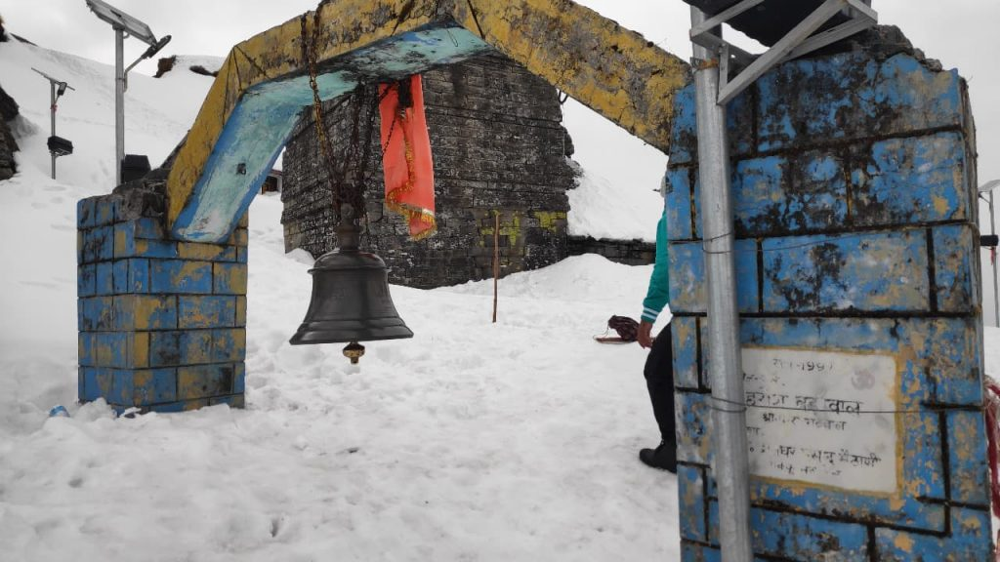
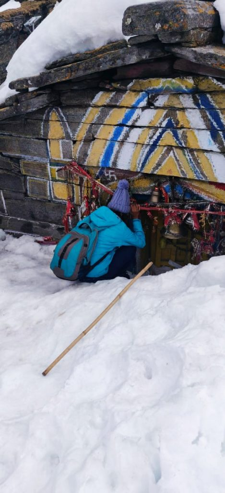
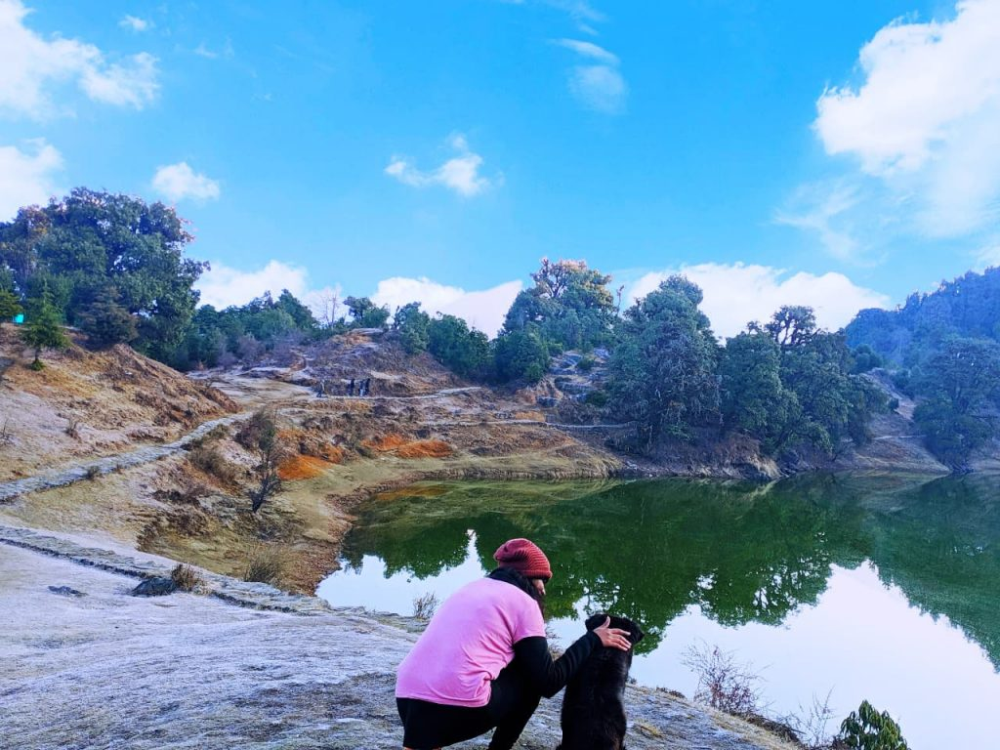
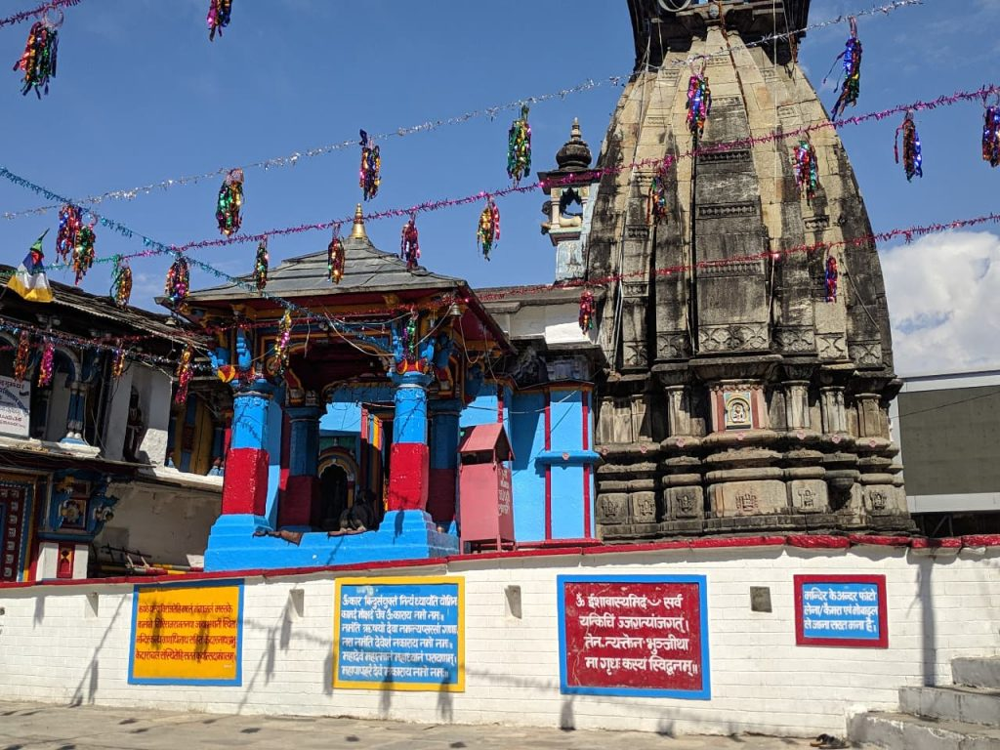
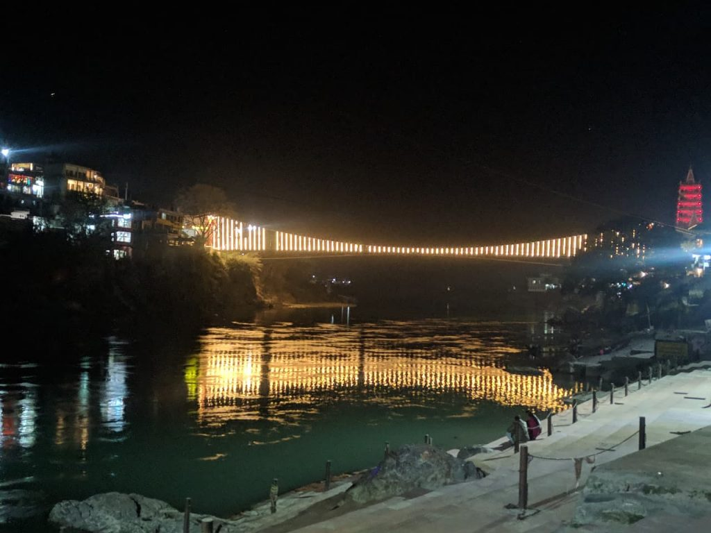

Favorite season differs from people to people. For me, its winter! Ask me why? Of course it’s full of snow and cool climate. But guess what, I had not witnessed snow in my life ever. I wanted to do skiing and as you know Auli Laga Joshimath is the premier destination in India for skiing. And hence I planned an Uttarakhand travel. But not just that. The primary reason being Mahashivratri and as I am a Shiva devotee, I wished to trek to the world’s highest Shiva temple in Tungnath.
I reached Delhi early morning around 4 am, freshened up and started at 7 am. I left early so as to avoid the Delhi traffic. It’s always recommended to reach Rishikesh and then start for Joshimath the next day. But as I had a personal car, I decided to drive at a stretch as much as possible so as to reach the nearby Joshimath. I preferred the Lansdowne – Pauri route as it has no tolls, less traffic and landslides. It a good decision to skip the ‘all weather road’ that starts from Rishikesh.
En-route we enjoyed scenic beauty at Landsdowne, Pauri, Srinagar and Devprayag. I reached Karnaprayag around 7 pm in the evening and decided to stay there that night as I was tired. I stayed at GMVN tourist rest house, the only better option which offers dorm and rooms from Rs 250/- onwards. Otherwise it is recommended to stay at Pipalkoti.
The next morning I started at 9 am after having a delicious breakfast of Parathas. It took almost 4 hours because of road blocks due to construction work. So it is advisable to start as early as possible. Immediately after reaching, I went up by Chair Lift around 3 pm to try skiing. As I was late, the officer gave me only a one way ticket as the Chair lift/cable car shuts by 4 pm. He asked me to trek down so that I could stay up there for a longer time. I saved Rs. 250 because of this. Further my hotel manager helped me negotiate with the skiing guide for a package of Fun Skiing for an hour and a Slater ride for two at just Rs. 500.
Later I enjoyed the sunset and some Maggie at the Maggie point near the most expensive and luxurious hotel Cliff top. As it started getting colder, I started descending to the base. It was my first experience in the snow for which Uttarakhand travel is famous. I was so scared as every time I put my feet to trek down, it went two feet into the snow! Stay at Auli is expensive but because of my research I got a budget stay at Hotel Snowcity. It was recommended by Mountain Peak tours & Travels who upgraded my stay to super deluxe room at just Rs. 1500 which also had a heater in the room with amazing views of Nanda Devi peaks. Was it the chilling cold or the dream to wear a chiffon saree in snow the next day that kept me awake all night?
I woke up to see a beautiful sunrise. The beautiful rays of sunlight surpassing the Nanda Devi peaks made me smile. The blue sky and the fresh air made me fall in love again. I was in love with the beautiful nature with snow all around. I wore the saree gracefully and the bindi added a touch of being desi. While all were still sleeping, I managed to go out and play in the snow. I completed my bucket list dream of of wearing saree in snow along with that of Uttarakhand travel.
After breakfast, I started for Chopta Tungnath via Chamoli Gopeshwar route. It is a narrow road which takes you through dense jungles. Though it is not a recommended route, it was another great decision to go via that route which saved time. It is a bit scary as the edges of the roads are covered with snow. But my friend who turned to be an expert driver managed to drive well. How can I not appreciate him for this!
I woke up filled with positive energy as I was going to trek up to the World’s highest Shiva Temple Tungnath.Chanting the words ‘Har Har Mahadev’, we started the trek at 7.30 am. This was one of the most important moments of my Uttarakhand travel itinerary. It is a challenge in itself to trek on a 4 feet deep snow covered trail. After taking a number of small breaks, I managed to reach the temple.
It was not less than an achievement to visit the World’s highest Shiva temple during Mahashivratri. The trek from Chopta to Tungnath is 3.5 km in distance and further 1.5 km steep trek leads to the summit of Chandrashila.
 Due to bad weather conditions, I couldn’t trek further and hence I missed going to the Chandrashila Peak. I started descending and reached down by 4 pm. Indeed the trek was exhilarating yet tiring. I had some yummy sandwiches at Moksha café later on.
I headed towards Sari village which is almost 20 kms from Chopta and stayed at Hotel Mountain View. I was exhausted and wasn’t ready for the trek to Deoria Tal which was scheduled next day. How can I miss it in spite of coming to the base point? I also had to reach Rishikesh by evening the next day after the visit to Deoria Tal. So due to time constraints, I took a horse ride to the top by myself. I negotiated with the horse men for Rs.500 and took me to the point before sunrise.
To witness the sunrise views, my horse man gave me a wake up call early in the morning at 5.30 am and we started at 5:45 am. As promised he dropped me at the top before sunrise in an hour. Then I spent some me time at the Tal where one could see the reflection of the Chaukamba Peak in the water. What a peaceful place it was. I clicked some wonderful pictures with the help of my tripod and started my descend back to the base village Sari with some lovely Uttarakhand travel memories. A dog was my companion and he guided me all the way back.
While returning I stopped at a Maggie point where I met three more travellers from Dehradun who shared their experiences of traveling. After coming down, I joined my group and we started our journey to Rishikesh. En-route I visited Omkareshwar Temple at Ukhimath. When Kedarnath temple is covered with snow, the deity is brought down to Omkareshwar temple and worshipped there. It is the only temple where all the Panch Kedar linga namely Kedarnath, Madhyamaheshwar, Tungnath, Rudranath and Kalpeshwar are present. Kedarnath is just 50 kms from this place.
After a terrible traffic jam on all weather road, we managed to reach Rishikesh after 9 hours. Even after being tired, I wanted to sit at the ghats near the Lakshman Jhula. I went to the Lakshman Jhula and enjoyed some time there alone. Though it’s a sacred land of God, I couldn’t take the risk to wait there for a longer time. I couldn’t eat anything as it was too late and the cafés closed down. I started walking back to my hotel which was 1.5 km away from Lakshman Jhula. It started raining heavily once I reached.
